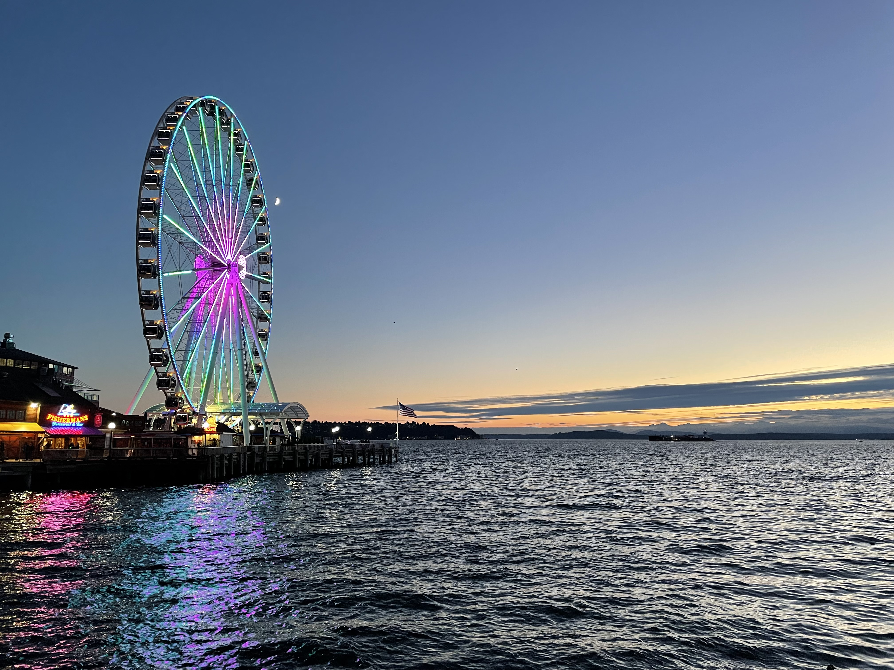

This summer I got a chance to join Meta Platforms Inc. as an intern and lived in
Seattle, a charming city, for three months. To read more about my life in seattle,
welcome to take a look here! And pictures can be found
in the gallery.

Seattle
Trip to Olympic
There is a zoo 100 miles away from Seattle called Olympic Game Farm. There are many kinds of animals
inside. My girl friend and I took a day trip to there and had a great time. We fed the animals with
bread and took many amazing pictures! Welcome to take a look about our
day-trip!